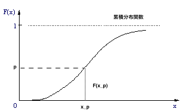
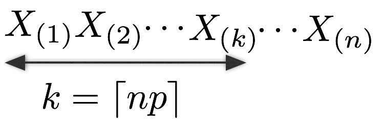

1.1 順序統計量
1.2 p-分位点
1.3 目的
1.4 方法
1.5 流れ
2.1 補題13.1
2.2 補題13.2
3.1 定理13
3.2 系
3.3 補足
3.4 例13.1
4.1 漸近相対効率
4.2 例13.2
用語紹介とこの章の目的
\(X_{1},\cdots,X_{n}\)を(連続)確率分布Fに従うi.i.dな確率変数列とする。
これらの観測値は全て異なるとする。
その観測値の大きさ順に確率変数列を並べ替えて、
\(X_{(n:1)} < X_{(n:2)} < \cdots < X_{(n:n)}\)
と書ける。このとき、これらを\(\bf{順序統計量}\)という。
また、簡単のために通常、この表記からnを除いて
\(X_{(1)} < X_{(2)} < \cdots < X_{(n)}\)
と書く。
①p-分位点(=\(x_p\))
②p-標本分位点(=\(X_{(k)}\))
ここで\(k\)は\(k=\lceil np \rceil\)である。(\(np\leq k < np+1\))
ただし、簡単のために本書ではp-標本分位点を\(X_{(np)}\)と書く。
\(\underline{条件}\)
分布Fに密度f(x)が存在して、連続であり、いくつかの分位点の近傍で正値をとる。
\(\underline{示したいこと}\)
対応する標本分位点の同時分布は漸近正規性をもつこと。
ただし、簡単のために2つの分位点について考える。
例：
分位点\(x_{p_1},x_{p_2}\)に対する標本分位点\(X_{np_1},X_{np_2}\)の同時分布が
漸近正規性をもつことを示す。
分布Fからの順序統計量\(X_{(i)},i=1,\cdots,n\)を累積分布関数で変換すると、
\(0 < F(X_{(1)}=x_{(1)}) < F(X_{(2)}=x_{(2)}) < \cdots < F(X_{(n)}=x_{(n)}) < 1\)
を満たし、\(U_{(i)}=F(X_{(i)})\)は一様分布u(0,1)からの標本の順序統計量とみなせる。
そこで、まず一様分布からの順序統計量が漸近正規性をもつことを証明する(=定理13)。
その後、逆変換\(g(u)=F^{-1}(u)\)に対してクラメールの定理(7章)を用いて
一般の分布からの順序統計量についても漸近正規性をもつことを証明する。
漸近正規性をもつことを示したい。
\(\to\)系(ゴール)
そこで、まず一様分布の順序統計量の同時分布が漸近正規性をもつことを示す。
\(\to\)定理13
一様分布の順序統計量の同時分布が指数分布を用いた別の確率変数の同時分布と
等価であることを示す。
\(\to\)補題13.1(証明なし)
直接求まらない。
ただし、その同時分布の一部が漸近正規性を漸近正規性をもつことが示せる。
\(\to\)補題13.2
定理13を示すための補題2つ
\(Y_{1},Y_{2},\cdots,Y_{n+1}\)はi.i.d.で平均1の指数分布に従う確率変数とする。
また、\(S_{k}=\sum_{i=1}^{k}Y_{i},k=1,\cdots,n+1\)と定義する。
このとき、
\begin{align*} \left( \frac{S_1}{S_{n+1}},\cdots,\frac{S_{n}}{S_{n+1}} \right) \end{align*}
の分布は、一様分布u(0,1)からの大きさnの標本から求められる順序統計量\begin{align*} (U_{(1)},\cdots,U_{(n)}) \end{align*}
の分布と同じである。\(\underline{指数分布}\)
確率密度関数 : \(f(y)=\frac{1}{\theta}\exp(-\frac{y}{\theta})I(y>0)\)
平均 : \(E[y]=\frac{1}{\theta}\)
分散 : \(V(y)=\frac{1}{\theta^{2}}\)
この補題より\((U_{(k_{1})},U_{(k_{2})})(1\leq k_1 < k_2 \leq n)\)の同時分布は
\begin{align} \left( \frac{S_{k_{1}}}{S_{n+1}},\frac{S_{k_{2}}}{S_{n+1}} \right) \end{align}
と同じ分布になる。これは、7章の方法で漸近正規性をもつことがわかる。
\(\underline{補題13.2}\)
\(Y_1,Y_2,\cdots,Y_{n+1}\)はi.i.d.で平均1の指数分布に従う確率変数とする。
また、\(n\to \infty\)のとき、\(\sqrt{n}(k_1/n - p_1)\to 0\)かつ\(\sqrt{n}(k_2/n-p_2)\to 0\)とする。
このとき、
\begin{align*} \sqrt{n+1}\left( \begin{array}{c} \frac{S_{k_1}}{n+1}-p_1 \\ \frac{(S_{k_2}-S_{k_1})}{n+1}-(p_2-p_1) \\ \frac{(S_{n+1}-S_{k_2})}{n+1}-(1-p_1) \end{array} \right) \stackrel{\mathcal{L}}{\longrightarrow}\mathcal{N}(\bf{0},\bf{\Sigma}) \end{align*}
が成り立つ。ただし\begin{align*} \bf{\Sigma} = \left( \begin{array}{ccc} p_1 & 0 & 0\\ 0 & p_2 - p_1 & 0\\ 0 & 0 & 1-p_2 \end{array} \right) \end{align*}
である。平均1の指数分布の分散は1であり、
\(k \to \infty\)のとき、中心極限定理より \begin{align*} \sqrt{k}\left( \frac{S_{k}}{k}-1 \right)\stackrel{\mathcal{L}}{\longrightarrow}\mathcal{N}(0,1) \end{align*}
が成り立つ。\(n\to\infty\)のとき\(k_{1}/n\to p_{1}\)であれば次を得る。
\begin{align*} \sqrt{n+1}\left( \frac{S_{k_{1}}}{n+1} - \frac{k_{1}}{n+1}\right) &= \sqrt{\frac{k_1}{n+1}}\sqrt{k_{1}}\left( \frac{S_{k_1}}{k_1}-1 \right)\\ & \stackrel{\mathcal{L}}{\longrightarrow}\sqrt{p_1}\mathcal{N}(0,1)\\ &= \mathcal{N}(0, p_1) \end{align*}
同様に、\(n\to \infty\)のとき\(k_1/n\to p_1,k_2/n\to p_2\)であれば以下を得る。\begin{align*} &\sqrt{n+1}\left( \frac{(S_{k_2} - S_{k_1})}{n+1} - \frac{k_2 - k_1}{n+1} \right)\\ &= \sqrt{\frac{k_2 - k_1}{n+1}}\sqrt{k_2 - k_1}\left( \frac{\sum_{j=k_1+1}^{k_2}Y_j}{k_2 - k_1} -1 \right)\\ &= \sqrt{p_2 - p_1}\mathcal{N}(0,1)\\ &\stackrel{\mathcal{L}}{\longrightarrow}\mathcal{N}(0,p_2 - p_1) \end{align*}
また、\begin{align*} &\sqrt{n+1}\left( \frac{(S_{n+1} - S_{k_2})}{n+1} - \frac{n+1-k_2}{n+1} \right)\\ &= \sqrt{\frac{n+1-k_2}{n+1}}\sqrt{n+1-k_2}\left( \frac{\sum_{j=k_2+1}^{n+1}}{n+1-k_2} - 1 \right)\\ &= \sqrt{1-p_2}\mathcal{N}(0,1)\\ &\stackrel{\mathcal{L}}{\longrightarrow}\mathcal{N}(0,1 - p_2) \end{align*}
\(S_{k_1},S_{k_2}-S_{k_1},S_{n+1}-S_{k_2}\)は互いに独立である。
なぜなら、
\begin{align*} S_{k_1} &= \sum_{j=1}^{k_1}Y_{j}\\ S_{k-2}-S_{k_1} &= \sum_{j=k_1 +1}^{k_2}Y_{j}\\ S_{n+1}-S_{k_2} &= \sum_{j=k_2 +1}^{n+1}Y_{j} \end{align*}
であり、\(Y_1,\cdots,Y_{n+1}\)はi.i.d.であるから。また、
\begin{align*} \sqrt{n+1}\left( \frac{S_{k_1}}{n+1} - p_1 \right) \end{align*}
と\begin{align*} \sqrt{n+1}\left( \frac{S_{k_1}}{n+1} - \frac{k_1}{n+1} \right) \end{align*}
の差は、\begin{align*} \sqrt{n+1}\left( \frac{k_1}{n+1} - p_1 \right) \end{align*}
であり、これは\(n\to \infty\)で0に収束するので漸近的に同じである。ゆえに、
\begin{align*} \sqrt{n+1}\left( \frac{S_{k_1}}{n+1} - p_1 \right)\stackrel{\mathcal{L}}{\longrightarrow}\mathcal{N}(0,p_1) \end{align*}
が成り立つ。他の2つも同様に\begin{align*} \sqrt{n+1}\left(\frac{(S_{k_2}-S_{k_1})}{n+1}-(p_2-p_1)\right)\stackrel{\mathcal{L}}{\longrightarrow}\mathcal{N}(0,p_2 - p_1)\\ \sqrt{n+1}\left(\frac{(S_{n+1}-S_{k_2})}{n+1}-(1-p_1)\right)\stackrel{\mathcal{L}}{\longrightarrow}\mathcal{N}(0,1-p_2) \end{align*}
が成り立つ。よって
\begin{align*} \sqrt{n+1}\left( \begin{array}{c} \frac{S_{k_1}}{n+1}-p_1 \\ \frac{(S_{k_2}-S_{k_1})}{n+1}-(p_2-p_1) \\ \frac{(S_{n+1}-S_{k_2})}{n+1}-(1-p_1) \end{array} \right) \stackrel{\mathcal{L}}{\longrightarrow}\mathcal{N}(\bf{0},\bf{\Sigma}) \end{align*}
が成り立つ。\(\underline{定理13}\)
\(U_{(1)} < \cdots < U_{(n)}\)は一様分布u(0,1)からの大きさnの順序統計量とする。
\(n\to \infty, k_1 \to \infty, k_2 \to \infty\)において
\begin{align*} \sqrt{n}\left( \frac{k_1}{n} - p_1 \right) &\to 0\\ \sqrt{n}\left( \frac{k_2}{n} - p_2 \right) &\to 0 \end{align*}
が成り立つなら、\(0 < p_1 < p_2 < 1\)について以下が成り立つ。\begin{align*} \sqrt{n} \left( \begin{array}{c} U_{(k_1)}-p_1 \\ U_{(k_2)}-p_2 \end{array} \right) \stackrel{\mathcal{L}}{\longrightarrow}\mathcal{N}(\bf{0},\bf{\Theta}) \end{align*}
ただし、\begin{align*} \bf{\Theta} = \left( \begin{array}{cc} p_1(1-p_1) & p_1(1-p_2)\\ p_1(1-p_2) & p_2(1-p_2) \end{array} \right) \end{align*}
である。\((U_{(k_1)},U_{(k_2)})\)の同時分布は
\begin{align*} \left( \frac{S_{k_1}}{S_{n+1}}, \frac{S_{k_2}}{S_{n+1}} \right) \end{align*}
と同じ分布になる。\begin{align*} \sqrt{n+1}&\left( \begin{array}{c} \frac{S_{k_1}}{n+1}-p_1 \\ \frac{(S_{k_2}-S_{k_1})}{n+1}-(p_2-p_1) \\ \frac{(S_{n+1}-S_{k_2})}{n+1}-(1-p_1) \end{array} \right) \stackrel{\mathcal{L}}{\longrightarrow}\mathcal{N}(\bf{0},\bf{\Sigma})\\ &\\ &\bf{\Sigma} = \left( \begin{array}{ccc} p_1 & 0 & 0\\ 0 & p_2 - p_1 & 0\\ 0 & 0 & 1-p_2 \end{array} \right) \end{align*}
が成り立つ。関数\(g:\mathbb{R}^{d} \to \mathbb{R}^{k}\)の導関数\(\dot{g}(\bf{x})\)は \(\bf{\mu} \in \mathbb{R}^{d}\)の近傍で連続であると仮定する。
\begin{align*} \sqrt{n}(\bf{X}_{n}-\bf{\mu})\stackrel{\mathcal{L}}{\longrightarrow}\mathcal{N}(\bf{0},\bf{\Sigma}) \end{align*}
ならば、\begin{align*} \sqrt{n}(g(\bf{X}_{n})-\rm{g}(\bf{\mu})) \stackrel{\mathcal{L}}{\longrightarrow}\mathcal{N}(\bf{0},\dot{\rm{g}}(\bf{\mu}))\bf{\Sigma}\dot{\rm{g}}(\bf{\mu})^{T}) \end{align*}
が成り立つ。\begin{align*} \bf{X}_{\rm{n}} = \left( \begin{array}{c} \frac{S_{k_1}}{n+1}\\ \frac{S_{k_2}-S_{k_1}}{n+1}\\ \frac{S_{n+1}-S_{k_2}}{n+1} \end{array} \right),\ \ \bf{\mu} = \left( \begin{array}{c} p_1\\ p_2-p_1\\ 1-p_2 \end{array} \right) \end{align*}
とおくと、補題13.2より\begin{align*} \sqrt{n}(\bf{X}_{n}-\bf{\mu})\stackrel{\mathcal{L}}{\longrightarrow}\mathcal{N}(\bf{0},\bf{\Sigma}) \end{align*}
が成り立つ。また
\begin{align*} g(x_1,x_2,x_3) = \frac{1}{x_1+x_2+x_3}\left( \begin{array}{c} x_1\\ x_2 \end{array} \right) \end{align*}
とおくと、\begin{align*} g\left(\frac{S_{k_1}}{n+1},\frac{S_{k_2}-S_{k_1}}{n+1},\frac{S_{n+1}-S_{k_2}}{n+1}\right) =\frac{1}{S_{n+1}}\left( \begin{array}{c} S_{k_1}\\ S_{k_2} \end{array} \right) \end{align*}
が得られる。これは補題13.1より\((U_{(k_1)}, U_{(k_2)})\)と同じ分布を持つ。よってクラメールの定理より
\begin{align*} &\sqrt{n} (g(\bf{X}_{\rm{n}}) - \rm{g}(\bf{\mu}) )\\ &=\sqrt{n}\left(\frac{1}{S_{n+1}}\left( \begin{array}{c} S_{k_1}\\ S_{k_2} \end{array} \right) - \frac{1}{p_1 + (p_2 - p_1) + (1 - p_2)}\left( \begin{array}{c} p_1\\ p_1 + (p_2 - p_1) \end{array} \right) \right) \\ &= \sqrt{n}\left(\frac{1}{S_{n+1}}\left( \begin{array}{c} S_{k_1}\\ S_{k_2} \end{array} \right) -\left( \begin{array}{c} p_1\\ p_2 \end{array} \right) \right)\\ &= \sqrt{n}\left( \begin{array}{c} U_{(k_1)}-p_1\\ U_{(k_2)}-p_2 \end{array} \right)\\ &\stackrel{\mathcal{L}}{\longrightarrow}\mathcal{N}(\bf{0},\dot{\rm{g}}(\bf{\mu})\bf{\Sigma}\dot{\rm{g}}(\bf{\mu})^{T}) \end{align*}
が成り立つ。また、
\begin{align*} \dot{g}(x_1, x_2, x_3)=\frac{1}{(x_1 + x_2 + x_3)^{2}}\left( \begin{array}{ccc} x_2 + x_3 & -x_1 & -x_1\\ x_3 & x_3 & -(x_1+x_2) \end{array} \right) \end{align*}
より、\begin{align*} \dot{g}(p_1, p_2 - p_1, 1-p_2) = \left( \begin{array}{ccc} 1-p_1 & -p_1 & -p_1\\ 1-p_2 & 1-p_2 & -p_2 \end{array} \right) \end{align*}
である。よって、
\begin{align*} \bf{\Theta}&= \dot{g}(\bf{\mu})\bf{\Sigma}\dot{\rm{g}}(\bf{\mu})^{T} \\ &= \dot{g}(\bf{\mu})\left( \begin{array}{ccc} p_1 & 0 & 0\\ 0 & p_2 - p_1 & 0\\ 0 & 0 & 1-p_2 \end{array} \right)\dot{\rm{g}}(\bf{\mu})^{T}\\ &= \left( \begin{array}{cc} p_1(1-p_1) & p_1(1-p_2)\\ p_1(1-p_2) & p_2(1-p_2) \end{array} \right) \end{align*}
がわかる。\(\underline{系}\)
\(X_{(1)} < \cdots < X_{(N)}\)は、密度fをもつ分布Fからの大きさnの順序統計量とする。
ただし、\(0 < p_1 < p_2 < 1\)に対する分位点\(x_{p_1}\)と\(x_{p_2}\)の近傍でf(x)は連続で正であるとする。
このとき
\begin{align*} \sqrt{n}\left( \begin{array}{c} X_{(np_1)} - x_{p_1}\\ X_{(np_2)} - x_{p_2} \end{array} \right) \stackrel{\mathcal{L}}{\longrightarrow}\mathcal{N}(\bf{0},\bf{\Gamma}) \end{align*}
が成り立つ。ただし、
\begin{align*} \bf{\Gamma} = \left( \begin{array}{cc} \frac{p_1(1-p_1)}{f^2(x_{p_1})} & \frac{p_1(1-p_2)}{f(x_{p_1})f(x_{p_2})}\\ \frac{p_1(1-p_2)}{f(x_{p_1})f(x_{p_2})} & \frac{p_2(1-p_2)}{f^2(x_{p_2})} \end{array} \right) \end{align*}
である。一様分布からの順序統計量\(U_{i}\)と、分布Fからの順序統計量\(X_{i}\)について
\begin{align*} U_{i} = F(X_{i}) \end{align*}
が成り立つ(Fは累積分布関数)。p-標本分位点において
\begin{align*} X_{(k_1)}=X_{(np_1)} \end{align*}
である。\begin{align*} \sqrt{n}\left( \begin{array}{c} U_{(k_1)} - p_1\\ U_{(k_2)} - p_2 \end{array} \right) \stackrel{\mathcal{L}}{\longrightarrow}\mathcal{N}(\bf{0},\bf{\Theta})\\ \\ \bf{\Theta} = \left( \begin{array}{cc} p_1(1-p_1) & p_1(1-p_2)\\ p_1(1-p_2) & p_2(1-p_2) \end{array} \right) \end{align*}
が成り立つ。関数\(g:\mathbb{R}^{d} \to \mathbb{R}^{k}\)の導関数\(\dot{g}(\bf{x})\)は \(\bf{\mu} \in \mathbb{R}^{d}\)の近傍で連続であると仮定する。
\begin{align*} \sqrt{n}(\bf{X}_{n}-\bf{\mu})\stackrel{\mathcal{L}}{\longrightarrow}\mathcal{N}(\bf{0},\bf{\Sigma}) \end{align*}
ならば、\begin{align*} \sqrt{n}(g(\bf{X}_{n})-\rm{g}(\bf{\mu})) \stackrel{\mathcal{L}}{\longrightarrow}\mathcal{N}(\bf{0},\dot{\rm{g}}(\bf{\mu}))\bf{\Sigma}\dot{\rm{g}}(\bf{\mu})^{T}) \end{align*}
が成り立つ。\begin{align*} g(y_1,y_2)=\left( \begin{array}{c} F^{-1}(y_1)\\ F^{-1}(y_2) \end{array} \right) \end{align*}
とおくと、\begin{align*} \sqrt{n}(g(U_{(k_1)}, U_{(k_2)})-g(p_1, p_2)) &= \sqrt{n}\left(\left( \begin{array}{c} X_{(k_1)}\\ X_{(k_2)} \end{array} \right) -\left( \begin{array}{c} x_{p_1}\\ x_{p_2} \end{array} \right)\right)\\ &\stackrel{\mathcal{L}}{\longrightarrow}\mathcal{N} (\bf{0},\dot{\rm{g}}(\rm{p_1,p_2})\bf{\Theta}\dot{\rm{g}}(\rm{p_1,p_2})^{T}) \end{align*}
がわかる。また、\begin{align*} \dot{g}(y_1,y_2)=\left( \begin{array}{cc} \frac{1}{f(F^{-1}(y_1))} & 0\\ 0 & \frac{1}{f(F^{-1}(y_2))} \end{array} \right) \end{align*}
より、\begin{align*} \dot{g}(p_1, p_2) = \left( \begin{array}{cc} \frac{1}{f(x_{p_1})} & 0\\ 0 & \frac{1}{f(x_{p_2})} \end{array} \right) \end{align*}
である。よって、
\begin{align*} \bf{\Gamma}&= \dot{\rm{g}}(\rm{p_1,p_2})\bf{\Theta}\dot{\rm{g}}(\rm{p_1,p_2})^{T}\\ &= \left( \begin{array}{cc} \frac{p_1(1-p_1)}{f^2(x_{p_1})} & \frac{p_1(1-p_2)}{f(x_{p_1})f(x_{p_2})}\\ \frac{p_1(1-p_2)}{f(x_{p_1})f(x_{p_2})} & \frac{p_2(1-p_2)}{f^2(x_{p_2})} \end{array} \right) \end{align*}
がわかる。以上より、
\begin{align*} \sqrt{n}\left( \begin{array}{c} X_{(np_1)} - x_{p_1}\\ X_{(np_2)} - x_{p_2} \end{array} \right) \stackrel{\mathcal{L}}{\longrightarrow}\mathcal{N}(\bf{0},\bf{\Gamma}) \end{align*}
が成り立つ。1つの分位点については、この定理は以下のように書ける。
\begin{align*} \sqrt{n}(X_{(np)}-x_{p}) \stackrel{\mathcal{L}}{\longrightarrow}\mathcal{N}(0,\frac{p(1-p)}{f^2(x_p)}) \end{align*}
よって、\(x_p\)の推定値としての\(X_{(np)}\)は\(1/f(x_p)\)に比例する。正規分布\(\mathcal{N}(\mu,\sigma^2)\)からの大きさnの標本の中央値を\(m_n\)とする。
\(\mu\)は0.5-分位点であり、対応する0.5-標本分位点\(X_{n/2}\)は\(m_n\)である。
このとき、\(f(\mu)=1/(\sqrt{2\pi}\sigma)\)なので、以下を得る。
\begin{align*} \sqrt{n}(m_n - \mu) &\stackrel{\mathcal{L}}{\longrightarrow}\mathcal{N}\left(0,\frac{1/2(1-1/2)}{f^2 (\mu)}\right)\\ &= \mathcal{N}\left(0,\frac{\pi \sigma^2}{2}\right) \end{align*}
ただし、\(\mu\)の推定値としての\(\bar{X}_{n}\)と比較するなら、中心極限定理より
\(\sqrt{n}(\bar{X}_{n}-\mu)\stackrel{\mathcal{L}}{\longrightarrow}\mathcal{N}(0,\sigma^{2})\)である。
順序統計量は一つの確率変数が漸近正規性を持つことをいっているが、和の場合と比べてどれだけ正確か
\(\underline{相対効率}\)
\(\hat{\theta}_{1}\)と\(\hat{\theta}_{2}\)を\(\theta\)の推定値とする。
\(\sqrt{n}(\hat{\theta}_{1}-\theta)\stackrel{\mathcal{L}}{\longrightarrow}\mathcal{N}(0,\sigma_{1}^{2})\) と\(\sqrt{n}(\hat{\theta}_{2}-\theta)\stackrel{\mathcal{L}}{\longrightarrow}\mathcal{N}(0,\sigma_{2}^{2})\)
であるとき、\(\hat{\theta}_{2}\)に対する\(\hat{\theta}_{1}\)の相対効率は\(\sigma_{2}^{2}/\sigma_{1}^{2}\)で 定義される。
例13.1での\(\mu\)の推定値として中央値\(m_{n}\)の平均\(\bar{X}_{n}\)に対する
相対効率は\(\sigma^{2}/(\pi\sigma^{2}/2)=2/\pi\fallingdotseq0.64\)である。
これより、正規母集団の平均\(\mu\)を推定するのに\(\bar{X}_{n}\)の代わりに
\(m_{n}\)を用いる場合、大標本では観測値の36%を捨てていることに等しい。
分散大きい。
標本集めて、並び替えたものの一つを用いると、全ての標本を用いて推定した時の64%の性能
一個で64%分の働きならかなりよくね？
コーシー分布の密度は以下で与えられる。
\begin{align*} f(x) = \left( \frac{1}{\pi\sigma}\frac{1}{1+(x-\mu)^{2}/\sigma^{2}} \right) \end{align*}
平均も分散もない。その中央値は\(\mu\)、第1四分位点は\(x_{1/4}=\mu - \sigma\)であり、第3四分位点は\(x_{3/4}=\mu + \sigma\)である。
よって、\(\sigma\)は半四分位範囲である。
\begin{align*} \sqrt{n}(m_{n}-\mu)\stackrel{\mathcal{L}}{\longrightarrow}\mathcal{N}\left(0,\frac{\pi^{2}\sigma^{2}}{4}\right) \end{align*}
\begin{align*} \sqrt{n}\left( \begin{array}{c} X_{(n/4)} - (\mu - \sigma)\\ X_{(3n/4)} - (\mu + \sigma) \end{array} \right) \stackrel{\mathcal{L}}{\longrightarrow}\mathcal{N} \left( \bf{0}, \rm{\pi^2 \sigma^2}\left( \begin{array}{cc} 3/4 & 1/4\\ 1/4 & 3/4 \end{array} \right) \right) \end{align*}
よって\begin{align*} \sqrt{n}\left( \frac{X_{(3n/4)}-X_{(n/4)}}{2} - \sigma \right) \stackrel{\mathcal{L}}{\longrightarrow}\mathcal{N}\left(0,\frac{\pi^2 \sigma^2}{4}\right) \end{align*}